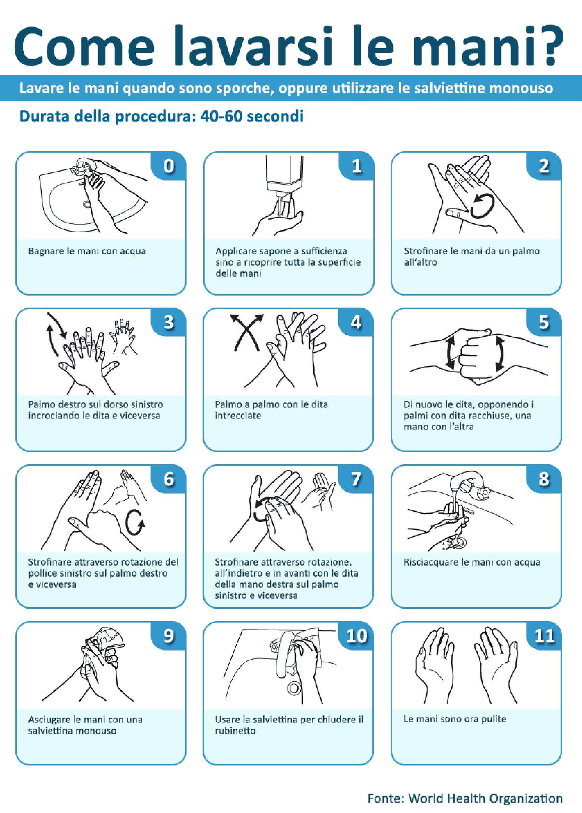

Misericordia di AricciaConfraternita di Misericordia di Ariccia ODV
Bambini · 3-5 anni
Lavaggio completo delle mani
Scheda 10 · procedura completa OMS (WHO)
Lavaggio completo delle mani con acqua e sapone: 40-60 secondi. Segui tutti i passaggi illustrati, con l'aiuto di un adulto. È utile a casa, a scuola, in emergenza e nelle aree di accoglienza.
